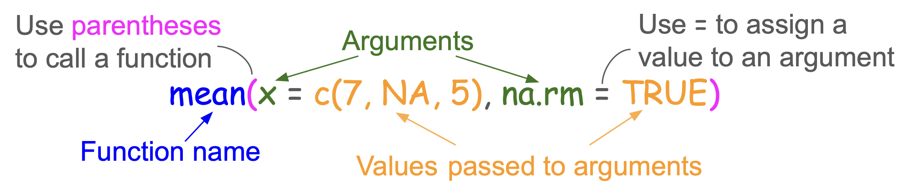

x y
1 1 a
2 2 b
3 3 cIOC-R Week 4
<-, =Element-wise comparison: >, <, >=, <=, ==, !=, returns logical results.
Element-wise comparison: NOT (!), AND (&), OR (|), etc., returns logical values.
%in% OperatorWe use %in% to check if left-side values are present in right-side, it returns logical values.
any(), all() and which()Given a set of logical vectors:
any(): is at least one of the values TRUE?all(): are all of the values TRUE?which(): return indices of TRUE values.We have a vector log2FoldChange <- c(1.2, -0.5, 0.9, 0.7, -1.1), what are the expected results for the following codes?
which(log2FoldChange > 0.8)any(log2FoldChange > 0.8)all(log2FoldChange > 0)Conditional statements allow us to make decisions based on logical conditions, guiding how the code behaves in different scenarios.
flowchart LR AA[Age] --> A((> 18)) A --> B(TRUE) A --> C(FALSE) B --> D[print "Adult"] C --> E[print "Minor"]
flowchart LR AA[P-value] --> A((< 0.05)) A --> B(TRUE) A --> C(FALSE) B --> D[print "Significant"] C --> E[print "Non significant"]
if and if elseSyntax:
if without else but never in the opposite way.TRUE or FALSE) and cannot be NA.flowchart LR AA[P-value] --> A((< 0.05)) A --> B(TRUE) A --> C(FALSE) B --> D[print "Significant"] C --> E[print "Non significant"]
[1] "Non significant"What will you get when pvalue is 0.03?
[1] "Significant"ifelse() FunctionSyntax:
Example:
[1] "Significant"Functions = Reusable blocks of code.

Use ? or help() to view the function’s documentation, e.g.: ?mean, help(mean)
Functions = Reusable blocks of code.
We’ll talk about packages next week!
We’ll talk about customised functions in session 8!